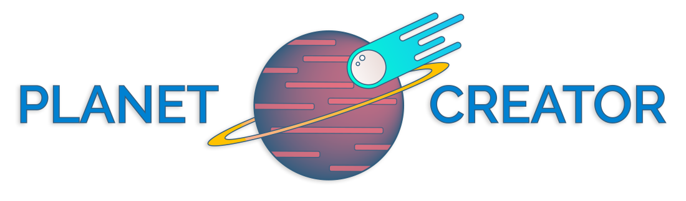

The Planet Creator simulation is a VR experience built for the HTC Vive that allows users to participate in the formation of astronomical objects. Unlike other VR astronomy experiences, it focuses on mixing experimentation with a puzzle to experience the formation of the solar system.
UX Designer
As User Experience Designer on the team, I was responsible for ensuring the experience remained fluid and immersive, and ensuring that users understood and enjoyed it. I utilized tools such as storyboards, user flows, and was responsible for conducting frequent user testing to validate and iterate on our experience.
UI Designer
I was also responsible for designing and creating the two-dimensional User Interface assets in a way that was consistent with the art direction. I also collaborated with other team members to utilize their expertise to design the other features of the UI (e.g. sound, animation, and environmental cues).
January - May 2017
An educational VR experience developed for the HTC Vive as an Industry Project at The Centre for Digital Media that teaches players about the formation of planets.
UI/UX Designer
Fire-Point Interactive
The Centre for Digital Media
Unity
Sketch
Adobe Illustrator CC
HTC Vive